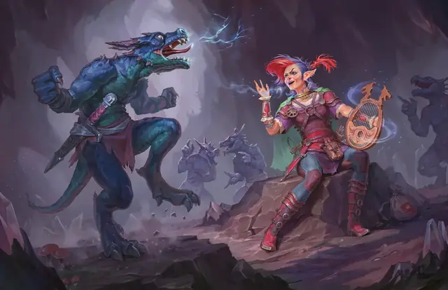

Злая насмешка
Vicious Mockery
Заговор, Очарование

Время сотворения Действие
Дистанция 60 футов
Компоненты В
Длительность Мгновенная
Классы Бард
Вы испускаете поток оскорблений вперемешку с тонкой магией на существо в пределах дистанции, видимое или слышимое вами. Цель должна преуспеть в спасброске Мудрости, иначе получит 1к6 Психического урона, и следующий бросок атаки до конца своего следующего хода совершит с Помехой.
Усиление заговора. Урон увеличивается на 1к6, когда вы достигаете 5-го (2к6), 11-го (3к6) и 17-го (4к6) уровней.